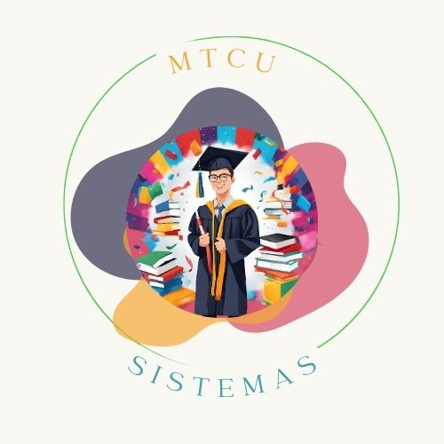
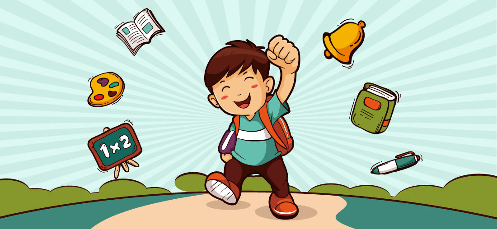
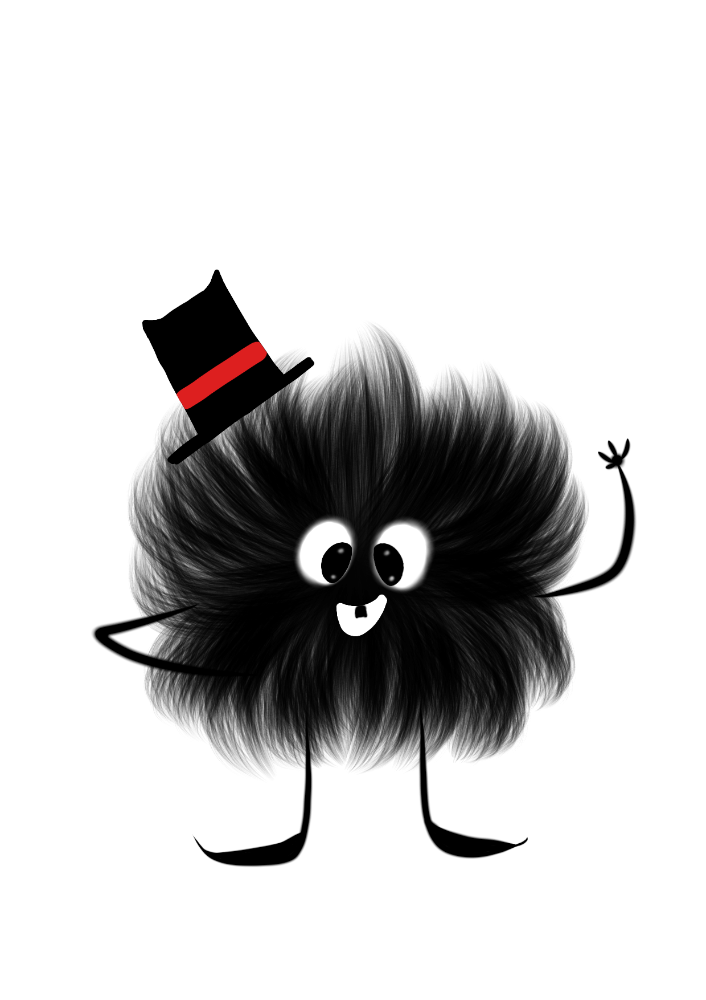
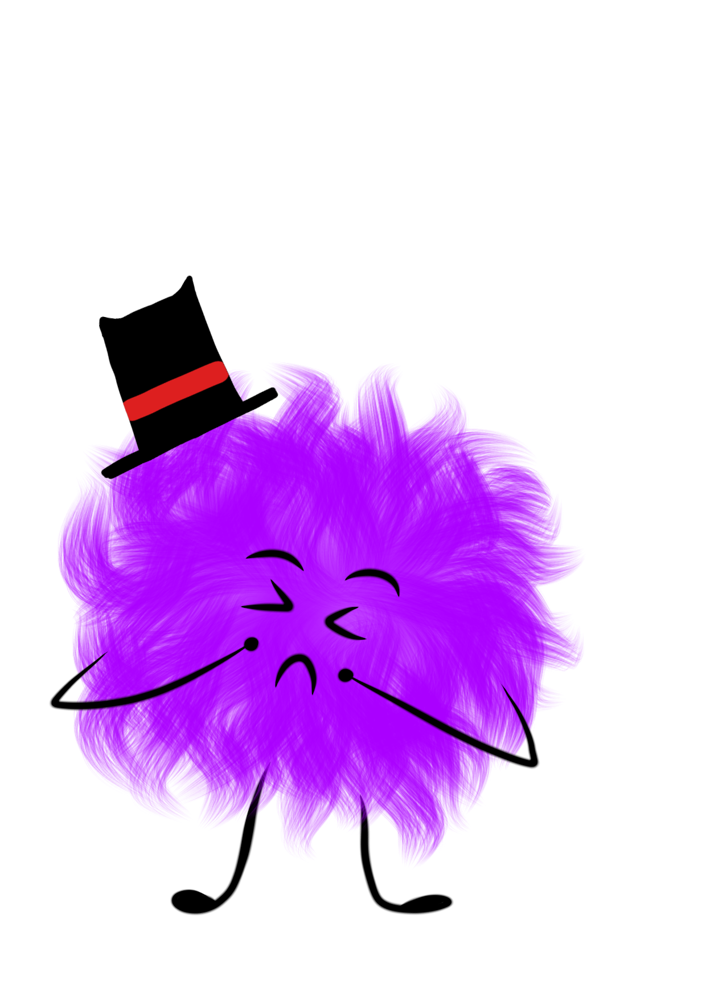
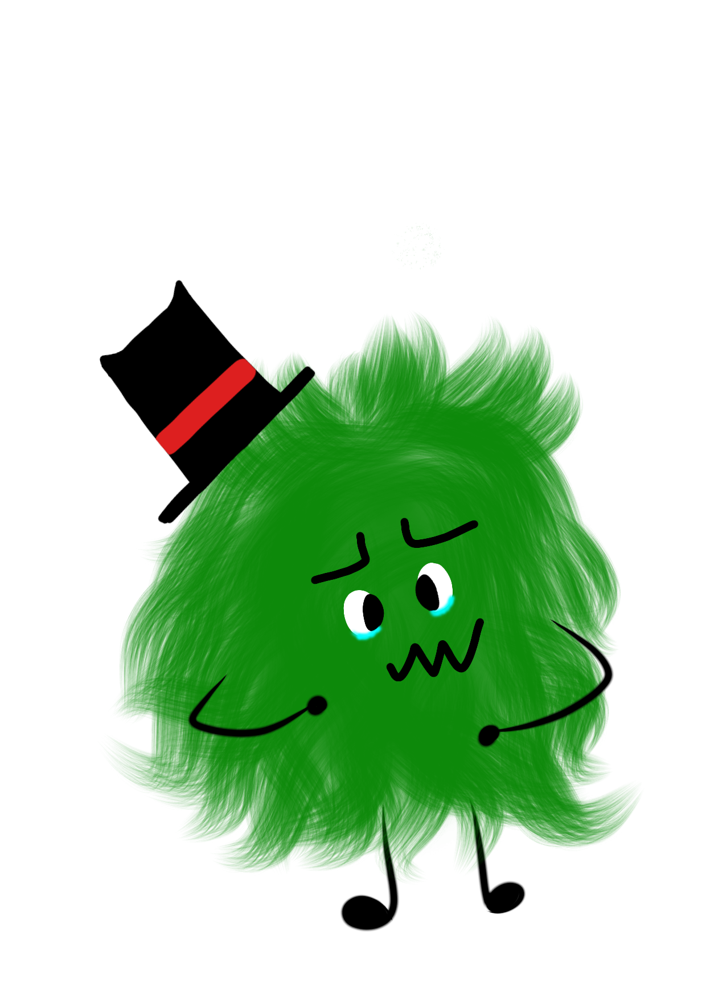
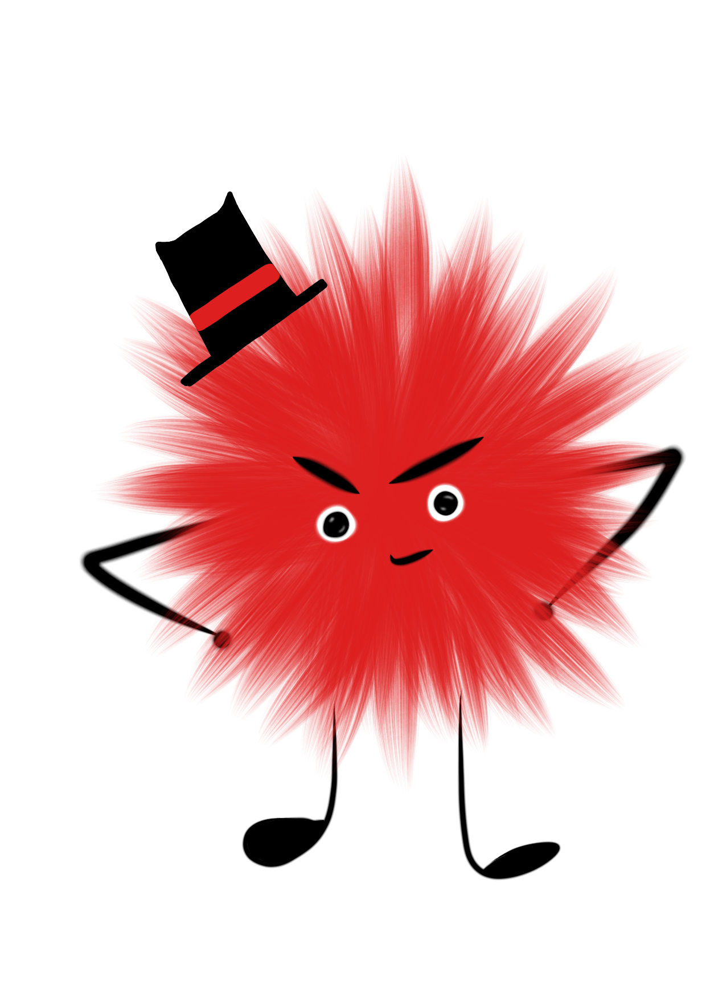
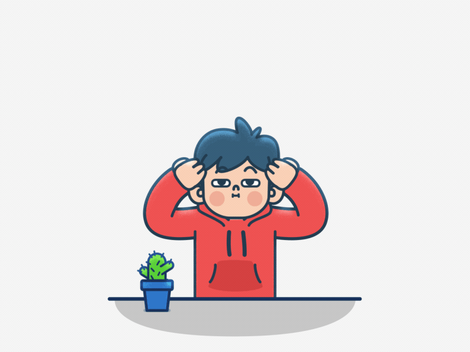
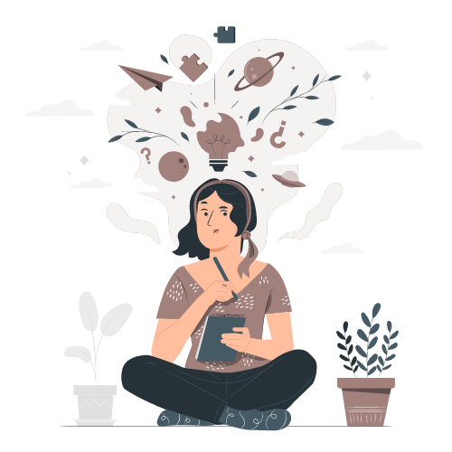

Motivación para terminar una carrera universitaria.
Acerca de
En MTCU, cada paso cuenta. Somos una comunidad de estudiantes comprometidos que valoramos la persistencia, la resiliencia y la pasión por
alcanzar nuestras metas académicas. Nos apoyamos mutuamente en los desafíos y celebramos juntos cada logro, creando un ambiente donde la
motivación es el motor que impulsa nuestras acciones.

MTCU.
Aquí, en la UTC y dentro de MTCU, somos arquitectos de nuestros propios destinos. Aprovechamos los recursos y la orientación que se nos
ofrece para convertirnos en líderes del mañana, no solo en el ámbito académico, sino también en la vida misma. Nos retamos a nosotros
mismos, exploramos nuevas ideas y nos comprometemos con el aprendizaje constante. En MTCU, nos inspiramos en el crecimiento personal y
en el impacto positivo que podemos generar en nuestras comunidades y en el mundo.

Motivación intrínseca.
Emociones
Las emociones son como los colores en un lienzo emocional que dan vida a cada experiencia. Por ejemplo, la alegría es
como un rayo de sol que ilumina todo a su alrededor, llenándolo de calidez y energía. La tristeza es como una melodía
nostálgica que te sumerge en un mar de reflexión y sensibilidad. La ira es como un fuego ardiente que puede consumirlo
todo si no se maneja con cuidado, pero a veces es un motor para el cambio. El miedo es como una sombra que se desliza
en la oscuridad, pero también puede ser un instinto protector.

Felicidad.
Recuerdo un día soleado en la playa, rodeado de amigos y riendo sin parar. Sentía una alegría profunda, como si el tiempo
se detuviera y solo existiera ese momento. Había una sensación de plenitud, como si mi corazón estuviera lleno hasta el tope.
Era la risa espontánea, el sol en mi piel y la compañía de personas que valoro, todo fusionado en un instante perfecto.

Miedo.
Hubo una vez que me vi en una situación de riesgo extremo, en la que sentí un miedo visceral. Fue como si el corazón se me saliera del
pecho y cada parte de mi cuerpo se tensara. La incertidumbre y la sensación de peligro inminente eran abrumadoras. Pero también fue un
momento que me recordó lo importante que es el instinto de supervivencia y cómo puede impulsarnos a actuar incluso cuando estamos paralizados
por el miedo.

Asco.
Experimenté un fuerte sentimiento de asco cuando me encontré con algo que iba completamente en contra de mis valores. Fue como una
sensación física de repulsión, un rechazo visceral hacia una situación que simplemente no concordaba con lo que creo y defiendo. Fue
como si mi cuerpo estuviera reaccionando de manera instintiva, intentando alejarme lo más posible de eso.

Ira.
Recuerdo una vez en la que me sentí profundamente enojado por una injusticia que presencié. Fue como si hubiera una chispa dentro de
mí que se convirtió en un incendio. Sentí un calor en mi pecho y una urgencia por actuar. Fue una mezcla de frustración y determinación,
una energía que me impulsó a querer cambiar lo que estaba mal.
Motivación Intrínseca
La motivación propia es como ese motor interno que impulsa cada paso que damos en la vida. Es como tener un fuego ardiente en el corazón,
una chispa que enciende la determinación y el deseo de alcanzar metas. Cuando siento esa motivación, es como si tuviera un imán que atrae
oportunidades y desafíos, y me impulsa a superar obstáculos. Es como tener un mapa con destinos que explorar, y esa pasión es el combustible
que me lleva a descubrir nuevos caminos.

Motivación.
A veces, esa motivación propia se nutre de logros pasados, de la sensación de crecimiento y desarrollo personal. Es como ver el fruto
de mi esfuerzo y sentir esa satisfacción que me impulsa a seguir adelante. Pero también puede surgir de la curiosidad, esa sed insaciable
de aprender, mejorar y expandir mis límites.Hay días en los que esa motivación brilla como un sol radiante, guiándome hacia mis objetivos
con claridad y entusiasmo. Sin embargo, en otros momentos, puede ser como una llama que parpadea en la tormenta, desafiada por la duda o
las dificultades. Pero incluso en esos momentos, sé que está ahí, esperando a ser avivada de nuevo.

Creatividad.
Test de motivación
Bienvenido al Test de Motivación diseñado por la MTCU para el curso de Programación orientada a objetos de la universidad
Tres Culturas. Este test tiene como objetivo evaluar tu capacidad para comprender eficazmente tus propias
emociones. Descubre tu estilo de motivación respondiendo a las siguientes preguntas, las cuales se centran en tus
comportamientos habituales en relaciones con tus motivos personales.
Para cada pregunta, elige la opción que mejor represente tu respuesta:
¿Con qué frecuencia sientes entusiasmo por tus metas y logros?
Nunca
A veces
Con frecuencia
Siempre
¿Cómo percibes tus logrós?
Inadecuados
Obligatorios
Gloriosos
Emocionantes
¿Te sientes motivado/a para aprender cosas nuevas o adquirir habilidades?
No, solo es por obligación
A veces por motivos externos
Siempre, me encanta sentirme útil
¿Qué tan satisfecho/a estás con tus logros personales hasta ahora?
Insatisfecho/a
Medianamente satisfecho/a
Satisfecho/a
Muy satisfecho/a
¿Cómo reaccionas frente a los desafíos?
Me abrumo fácilmente
Me siento inseguro/a de mis desiciones
Me enfrento a ellos con determinación pero sin dejar de sobrepensar
Los acepto con entusiasmo
¿Qué tanto valoras el crecimiento personal?
No lo considero importante
A veces pienso en ello
Lo considero importante
Es una prioridad para mí
¿Qué tan optimista te consideras en la parte de estudiar tu carrera?
Muy pesimista no es lo que quería
Pesimista porque no me siento a gusto estudiando esto
Optimista ya que me agrada lo que vemos y hacemos
Muy optimista es lo que quería estudiar
¿Cuánta pasión pones en lo que haces en base a tus proyectos personales y educativos?
Ninguna
Poca un 20% en cada una
Más que poca en cada una
Mucha
¿Te sientes capaz de superar los obstáculos que se presentan en tu camino?
Nunca, me siento insuficiente para lograrlo
A veces, depende de lo que se presente
Con frecuencia aunque el miedo no desaparece
Siempre
¿Con qué frecuencia te sientes desmotivado/a o sin energía?